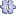

Poker
{kind=link}
{kind=link}
Poker ist der Name einer Familie von Glücksspielen, die in Form von Kartenspielen – normalerweise mit Pokerkarten des anglo-amerikanischen Blatts zu 52 Karten – gespielt werden und bei denen mit Hilfe von fünf Karten eine Hand (Pokerblatt) gebildet wird. Dabei setzen die Spieler ohne Wissen um das (genaue) Blatt des Gegners einen unterschiedlich hohen und mehr oder weniger wertvollen Einsatz (Spielmarken, Chips, Geld etc.) auf die Gewinnchancen der eigenen Hand. Die von den Spielern eingesetzten Chips einer Spielrunde („Pot“) fallen schließlich demjenigen Spieler mit der stärksten Hand zu oder dem einzig Übriggebliebenen, wenn alle anderen Spieler nicht bereit sind, den von ihm vorgelegten Einsatz ebenfalls zu bringen. Dies eröffnet die Möglichkeit, durch Bluffen auch mit schwachen Karten zu gewinnen. Das Ziel im Poker ist es, möglichst viele Chips, Spielmarken oder Geld von anderen Spielern zu gewinnen.
Je nach Spielvariante hat der Spieler verschiedene Möglichkeiten, sein Blatt zusammenzustellen. Auch die maximale und die bevorzugte Spieleranzahl sind je nach Variante verschieden. In manchen gewinnt nicht die beste Hand (High), sondern die schlechteste (Low).
Inhaltsverzeichnis[Verbergen] |
Ablauf eines Pokerspiels [Bearbeiten]
{kind=link}
Bei der folgenden Beschreibung handelt es sich um die geläufigen Regeln der Variante Texas Hold’em. Dennoch unterscheiden sich die Spielregeln der meisten anderen Varianten nur unwesentlich von dieser.
Bestimmung des Kartengebers [Bearbeiten]
Alle Spieler erhalten vor Spielbeginn eine aufgedeckte Karte. Der Spieler mit der höchsten Karte ist in der ersten Runde der Kartengeber (Dealer), was durch den Dealer Button, einen flachen, abgerundeten Zylinder angezeigt wird. Haben zwei Spieler die gleiche höchste Karte, so entscheidet die vom Bridge her bekannte Ordnung der Farben: Pik (♠) gilt als die höchste Farbe, gefolgt von Herz (♥), Karo (♦) und Kreuz (♣). Diese Farbreihenfolge gilt aber ausschließlich beim Finden des ersten Dealers, sobald die erste Hand gespielt wurde, sind die Farben völlig unbedeutend. Der Dealer Button rückt vor dem Beginn jeder neuen Runde eine Position im Uhrzeigersinn weiter, so dass jeder Spieler nacheinander Dealer ist. In einem Kasino ist der tatsächliche Kartengeber allerdings ein Kasinoangestellter, der nicht mitspielt.
Mindesteinsätze [Bearbeiten]
Bei den Blinds handelt es sich um Einsätze, die die ersten zwei Spieler links vom Geber (Dealer) in jedem Fall zahlen müssen, bevor die Karten gegeben werden. Üblicherweise zahlen die beiden Spieler links vom Geber den Small Blind und den Big Blind, wobei der Einsatz des Small Blinds in der Regel der Hälfte des Einsatzes des Big Blinds entspricht. Dabei entspricht die Höhe des Big Blinds auch der Höhe des Mindesteinsatzes.
Der Spieler, der sich links vom Big Blind befindet, eröffnet die erste Setzrunde (man sagt, er ist under the gun); der Big Blind ist als letzter an der Reihe. Wenn kein Spieler den Mindesteinsatz erhöht hat, kann der Big Blind entweder schieben oder erhöhen. Falls erhöht wurde, gelten die üblichen Bedingungen. In den weiteren Setzrunden ist der Small Blind zuerst an der Reihe und der Dealer wird als Letzter gefragt. Dadurch hat er einen Informationsvorsprung gegenüber den restlichen Spielern, da er weiß, wie sich die in der Hand verbliebenen Spieler verhalten. Dadurch entsteht der Vorteil der Position, der einen maßgeblichen Einfluss auf das Setzverhalten eines Spielers ausübt.
Falls nur noch zwei Spieler an einem Tisch spielen, es also zu einem Heads Up kommt, ändern sich die Regeln. Der Small Blind ist hier auch der Dealer. Vor dem Flop ist zwar wie gewöhnlich erst der Small Blind an der Reihe, nach dem Flop wird aber stets der Big Blind zuerst gefragt.
Die Höhe der Blinds bei Turnieren hängt von zwei Faktoren ab, zum einen von der Art des Turniers, zum anderen davon, wie lange das Turnier bereits läuft. Bei großen Turnieren wie der World Series of Poker beträgt der Small Blind zu Beginn etwa ein Prozent des Stacks eines Spielers. Besonders bei Fernsehturnieren steigen die Blinds schnell und sind bereits zu Beginn sehr hoch. Bei Poker Superstars machen der Big Blind anfangs fast 7 Prozent aus. Die Blinds steigen danach entweder nach einer bestimmten Zeit oder nach einer festgelegten Anzahl von gespielten Runden. Bei kleinen Onlineturnieren werden die Blinds alle fünf bis zehn Minuten erhöht. Falls die Blinds ansteigen, werden sie in der Regel zwar anfangs verdoppelt, im späteren Verlauf jedoch nur um 25–40 Prozent erhöht. Es kann jedoch auch geringe Abweichungen geben, damit es eine Konformität mit dem Wert der Chips gibt. Falls die Blinds zum Beispiel bei 10/20 liegen, werden sie für gewöhnlich auf 25/50 oder, wenn keine Chips vorhanden sind, die fünf wert sind, auf 20/50 erhöht (siehe auch: Blindssystem).[1]
Neben den Blinds gibt es bei manchen Spielweisen auch ein Ante. Ein Ante ist ein kleiner Betrag, der von jedem Spieler gezahlt werden muss, bevor die Karten gegeben werden. Nach dem Geben folgen normale Setzrunden entsprechend der Spielvariante und Setzstruktur. Beim Stud ist eine Variante verbreitet, bei der ein anhand der offenen Karte bestimmter Spieler ein so genanntes bring in setzen muss. Bei manchen großen Turnieren wie etwa der World Series of Poker kommt es im späteren Verlauf dazu, dass sowohl ein Ante, als auch Blinds eingehoben werden.[1]
Bei Cash Games werden die Blinds und gegebenenfalls auch das Ante gar nicht erhöht. Stattdessen muss ein Spieler ein Vielfaches des Big Blinds als buy in verwenden. Wie viel das ist, variiert je nach Spiel.

Ablauf einer Spielrunde [Bearbeiten]
Nachdem die Mindesteinsätze gesetzt worden sind, erhalten alle Spieler vom Dealer ihre Karten. Danach wird gesetzt. Ein Spieler kann erhöhen (raise), mitgehen (call), aussteigen (fold) oder, wenn in der gleichen Spielrunde noch kein anderer Spieler gesetzt hat, schieben (checken) oder setzen (bet).
Um in der Hand zu bleiben, muss ein Spieler mindestens mitgehen oder, falls nicht gesetzt wurde, schieben. In der ersten Setzrunde muss man, um seine Hand zu behalten, mindestens den Big Blind setzen. Da der Small Blind schon anfangs einen Betrag setzen musste, muss er nur noch den Einsatz „auffüllen“. Steigt er aber aus, muss er seinen Small Blind abgeben. Falls alle Spieler in einer Runde denselben Betrag in den Pot gezahlt haben oder ausgestiegen sind, folgt der nächste Schritt. Dieser Vorgang wiederholt sich im Regelfall, ehe alle Spieler, die bis zum Ende mitgegangen sind, ihre Karten vorzeigen (Siehe Abschnitt Showdown). Wenn bis auf eine Person alle Spieler ausgestiegen sind, erhält der verbliebene Spieler den Pot, meist ohne seine Karten vorzeigen zu müssen. Falls der verbliebene Spieler ein marginales Blatt hält, wird sein Verhalten als Bluff bezeichnet.
Showdown [Bearbeiten]
{kind=link}
Als Showdown wird das Aufdecken der bis dato verdeckten Karten der Spieler bezeichnet. Dies kann geschehen, wenn zumindest ein Spieler bereit ist, das all in eines Gegners zu zahlen. Alternativ dazu kann es auch nach der vierten und letzten Wettrunde zu einem Showdown kommen. Der Spieler, der zu diesem Zeitpunkt die beste Hand hält, erhält den gesamten Pot. Es kann aber auch zu einem geteilten Pot kommen, wenn zwei oder mehr in einen Pot involvierte Spieler eine gleichstarke Hand besitzen. Bei einem Showdown nach einem all in spielt der Faktor Glück eine größere Rolle als im regulären Spiel, da selbst sehr starke Hände mit weiteren Gemeinschaftskarten geschlagen werden können und der Spieler keinen Einfluss auf das Geschehen nehmen kann.[2]
Kombinationen [Bearbeiten]
- Hauptartikel: Hand
Eine Hand wird im Poker nach der Höhe der Kombination bewertet. Je unwahrscheinlicher eine Kombination ist, desto besser ist die Hand. Falls zwei Spieler die gleiche Kombination haben, entscheidet als letztes Kriterium der Kicker, also die Beikarte, wer den Pot erhält. Falls zwei Spieler allerdings die gleichen fünf Karten haben, kommt es in der Regel zu einem Split Pot, die Farben spielen dabei keine Rolle.[3]
| Name | Bedeutung | Beispiel | Entscheidungskriterium | Wahrscheinlichkeit (fünf Karten) |
Wahrscheinlichkeit (sieben Karten) |
|---|---|---|---|---|---|
| Höchste Karte (High Card) |
Keine der unteren Kombinationen | A♠ K♦ J♠ 7♣ 4♣ |
Höhe der einzelnen Karten | 50,12 % | 17,41 % |
| Ein Paar (One Pair) |
Zwei Karten gleichen Wertes | 10♠ 10♥ J♦ 8♣ 6♥ |
Höhe des Paars und der Beikarten | 42,26 % | 43,83 % |
| Zwei Paare (Two Pair) |
Zwei Paare | J♦ J♠ 8♣ 8♠ A♠ |
Höhe der Paare und der Beikarte | 4,75 % | 23,50 % |
| Drilling (Three Of A Kind) |
Drei Karten gleichen Wertes | Q♣ Q♥ Q♠ A♥ 4♣ |
Höhe des Drillings und der Beikarten | 2,11 % | 4,83 % |
| Straße (Straight) |
Fünf Karten in einer Reihe | 7♥ 8♣ 9♦ 10♥ J♠ | Höchste Karte | 0,392 % | 4,62 % |
| Flush |
Fünf Karten in einer Farbe | 3♠ 5♠ 8♠ 9♠ K♠ | Höhe der einzelnen Karten | 0,197 % | 3,03 % |
| Full House |
Ein Drilling und ein Paar | K♥ K♣ K♦ 9♠ 9♦ | Höhe des Drillings und Höhe des Paars | 0,144 % | 2,60 % |
| Vierling (Four Of A Kind) |
Vier Karten gleichen Wertes | A♣ A♦ A♥ A♠ 4♠ |
Höhe des Vierlings und der Beikarte | 0,0240 % | 0,17 % |
| Straight Flush |
Straße in einer Farbe | 8♣ 9♣ 10♣ J♣ Q♣ | Höchste Karte | 0,00139 % | 0,028 % |
| Royal Flush |
Straße in einer Farbe mit Ass als höchste Karte | 10♦ J♦ Q♦ K♦ A♦ | Split Pot | 0,000154 % | 0,0032 % |
Die Bildung des eigenen Blattes aus nur fünf Karten wird bei den inzwischen weniger verbreiteten Draw-Varianten sowie dem Five Card Stud angewendet. Bei den verbreiteten Varianten Texas Hold’em und Seven Card Stud stellt sich der Spieler sein ebenfalls fünf Spielkarten umfassendes Blatt aus den insgesamt sieben verfügbaren Karten zusammen; daher ergeben sich bei sieben Karten höhere Wahrscheinlichkeiten für die höherwertigen Kartenkombinationen.[4]
Bei einer Straße darf das Ass entweder am oberen Ende nach dem König oder am unteren Ende als Eins stehen. Eine Straight von Ass bis Fünf ist also gültig, ebenso wie eine Straße von Zehn bis Ass. Round The Corner Straights (Straße um die Ecke), beispielsweise von König bis Vier gelten dagegen nicht. Daraus folgt, dass eine Straße stets eine 5 oder eine 10 enthalten muss.
Spielvarianten [Bearbeiten]
{kind=link}
{kind=link}
{kind=link}

Um eine Pokervariante vollständig zu beschreiben, müssen die Spielart, die Setzstruktur, die Blindstruktur und Wertungsvariante sowie gegebenenfalls Sonderregeln vorgegeben werden. Die Spielart legt fest, welche Karten der Spieler sehen darf und welche Karten er für die Bildung der besten Hand verwenden darf. Die Setzstruktur gibt vor, wie viel der Spieler setzen oder erhöhen darf. Die Blindstruktur bestimmt, wie der Grundstock von Einsätzen für das Spiel gebildet wird. Mit den Sonderregeln kann das Spiel auf beliebige Weise abgeändert werden.
Grundsätzliche Spielarten [Bearbeiten]
- Siehe auch Liste der Pokervarianten
Man unterscheidet grob zwischen drei verschiedenen Kategorien des Kartenpokers.
In die Kategorie Hold’em fällt neben Texas Hold’em, das seit einiger Zeit mit Abstand die beliebteste Variante ist,[5] auch Omaha Hold’em, die der erstgenannten Variante sehr ähnlich ist. Bei diesen und allen weiteren Hold’em-Varianten kommen im Laufe der Zeit so genannte Community Cards (dt. Gemeinschaftskarten oder engl. Board Cards), bei diesen beiden Varianten sind es fünf, auf den Tisch. Mit diesen Karten kann jeder Spieler seine Hand bilden. Zusätzlich zu diesen Karten erhält jeder Spieler zu Beginn einer Runde Hole Cards. Diese Karten sind nur für diesen Spieler ersichtlich, können also nur von diesem Spieler genutzt werden. International ist die Variante No Limit Texas Hold’em am weitesten verbreitet. No Limit bedeutet, dass jeder Spieler in jedem Zug alle seine Chips setzen kann. Speziell bei der Variante Omaha Hold’em ist das Limit Pot Limit sehr weit verbreitet. Der Grund für die Popularität von Texas Hold’em ist, dass das Spiel zwar für Anfänger leicht zu erlernen ist, es aber dennoch seine Zeit braucht, bis ein Spieler ein hohes Niveau erreichen kann.
Beim Stud Poker erhält jeder Spieler sowohl offene, als auch verdeckte Karten. Ein weiteres Merkmal dieser Variante ist, dass die Position des Spielers, der die Runde eröffnet, sehr häufig wechselt. In diese Kategorie fällt neben dem Casinospiel Tropical Stud auch das weit verbreitete Seven Card Stud, welches das ältere Five Card Stud fast völlig verdrängt hat. Stud wird in der Regel immer mit Ante und Fixed Limit gespielt. Seven Card Stud war bis vor einigen Jahren meistens die einzige Variante, die in Casinos angeboten wurde. Mittlerweile offerieren aber auch immer mehr Spielbanken Texas Hold’em.
Die dritte Kategorie, das Draw Poker, wird als die Älteste angesehen. Hier erhält jeder Spieler eine, je nach Variante, festgelegte Anzahl an Karten, die er verdeckt in seiner Hand hält. Draw Poker ist die einzige Kategorie, bei der ein Spieler keine Karten des Gegners zu Gesicht bekommt. Deshalb ist der Glücksfaktor bei den Varianten des Draw auch größer als die Varianten des Stud und Hold’em Poker. Die bekannteste Variante ist Five Card Draw. Bei dieser Variante hält jeder Spieler fünf Karten in der Hand. Er kann in mehreren Setzrunden Karten gegen unbekannte Karten tauschen, um seine Hand zu verbessern. Five Card Draw war auch lange Zeit die beliebteste, am weitesten verbreitete Variante und wurde auch in vielen Filmen thematisiert. Hier sind insbesondere Western hervorzuheben, was den Grund hat, dass die Variante im Wilden Westen sehr weit verbreitet war.
Weitere verbreitete Casinopokervarianten, die nicht direkt zu diesen Kategorien gehören, sind Pai Gow Poker und Easy Poker. Poker kann auch mit Würfeln gespielt werden. Pokerwürfel entstanden um 1880 in den USA. Es existiert ein Patent aus dem Jahre 1881. Pokerwürfel zeigen an den sechs Flächen die Kartensymbole Ass, König, Dame, Bube, Zehn und Neun. Das Ass liegt der Neun, der König der Zehn und die Dame dem Buben gegenüber. Die drei grundlegend verschiedenen Formen des Würfelpoker sind Poker Dice oder Offenes Würfelpoker, Liar Dice oder Verdecktes Würfelpoker (franz. Poker menteur) und Escalero.
Setzstruktur [Bearbeiten]
{kind=link}
Die Setzstruktur gibt an, wie viel ein Spieler setzen und um wie viel er erhöhen darf. Auch hier wird zwischen verschiedenen Variationen unterschieden. In der No Limit-Variante darf der Spieler jederzeit seine gesamten Chips setzen, man sagt: er ist all in. Dieses Limit wird besonders häufig in den Hold’em-Varianten eingesetzt. Eine weit verbreitete Weisheit besagt, dass man bei No Limit die Karten seines Gegners spielt. Die Pot Limit-Variante unterscheidet sich von dem oben genannten No Limit nur dadurch, dass höchstens soviel gesetzt werden kann, wie sich bereits im Pot befindet. Wenn ein Spieler einen Einsatz leistet, wird dieser sofort zum Pot dazu addiert. Fixed Limit (oft auch nur Limit genannt) schreibt die Höhe der Einsätze und Erhöhungen direkt für jede einzelne Setzrunde vor. Es ist zwar möglich, dass in jeder Setzrunde das gleiche Limit verwendet wird, jedoch ist dies unüblich. Weit verbreitet ist es, dass der Grundeinsatz nach der Hälfte der Setzrunden verdoppelt wird. Eine weitere, häufig angewendete Regelung ist, dass in einer Setzrunde höchstens dreimal erhöht werden darf. Dieses Limit ist dem No Limit sehr gegensätzlich. Man sagt, dass hier, anders als bei No Limit, die eigenen Karten gespielt werden. Der Unterschied rührt daher, dass es bei dieser Variante sehr schwer ist, den Gegner aus einer Hand zu bluffen. Spread Limit ist bei weitem nicht so verbreitet, wie die drei anderen Varianten. Hier darf nur innerhalb eines bestimmten Bereichs gesetzt oder erhöht werden.[6]
Bei allen Limit-Varianten muss ein Spieler, der erhöhen will, den Einsatz mindestens um den Big Blind erhöhen. Bei Fixed Limit wird dies dem Spieler sogar vorgeschrieben; er muss also genau um den Blind erhöhen. Eine Ausnahme stellt bei den Varianten No- und Pot Limit das all in dar.
Eine weitere Ausnahme bildet der sogenannte Cap, hierbei wird der maximale Einsatz eines einzelnen Spielers über alle Setzrunden auf einen festen Betrag limitiert. Effektiv wird somit der Stack der Spieler für jede laufende Hand auf den Cap limitiert. Normalerweise werden nur No Limit und Pot Limit Cash Games mit hohen Blinds bzw. Antes mit einem Cap gespielt.
Struktur der Mindesteinsätze [Bearbeiten]
- Siehe auch Abschnitt Mindesteinsätze
Damit ein gewisser Druck auf die Spieler ausgeübt wird, muss sich vor dem Beginn einer Spielrunde eine gewisse Menge an Chips im Pot befinden. Je nach Variante sind die beiden Lösungen Blind und Ante verbreitet. Während Erstere nur von zwei Spielern entrichtet werden, dem so genannten Small- und Big Blind, muss das Ante von allen Spielern gezahlt werden.
Bei Hold’em-Varianten werden traditionell immer Blinds verwendet. Dem entgegen stehen sowohl Stud- als auch Draw-Varianten bei denen fast ausschließlich Antes geleistet werden müssen. Besonders im späteren Verlauf bei großen Hold’em-Turnieren, aber auch in Cash Games, werden oftmals sowohl Blinds als auch Antes verwendet.
Wertungsvarianten [Bearbeiten]
Die Wertungsvariante gibt die Reihenfolge der Kombinationsmöglichkeiten einer Hand an.
Die klassische Variante ist High. Hier gewinnt die beste Hand, gemessen an den gewöhnlichen Kombinationsmöglichkeiten. Der Royal Flush ist also die stärkste Hand, während High Card die schwächste Kombination darstellt. High ist heute am Weitesten verbreitet.
Bei Low (auch Lowball) gewinnt nicht die nach obigen Maßstäben beste, sondern die schwächste Hand. Low ist eigentlich nur ein Überbegriff, der wiederum verschiedene Wertungsvarianten kennt. Die am weitesten verbreitete Untervariante von Low wird Lowball ace to five genannt. Sie kennt weder Straights noch Flushs. Die niedrigste Karte ist das Ass, die eine Eins repräsentiert. Auf das Ass folgt die gewöhnliche Reihenfolge, also 2-10, gefolgt von den Bildkarten. Die beste Hand in oben angesprochener Variante ist also eine Kombination der Karten von Ass bis Fünf, die Schwächste ist ein Vierling aus Königen mit einer Dame als Kicker. Eine weitere Untervariante ist Lowball Deuce to Seven. Hier gibt es alle gewöhnlichen Kombinationen, also auch Straights und Flushs. Das Ass gilt als höchste Karte. Die beste Hand ist also Zwei bis Sieben ohne Sechs. Falls mehrere Spieler bei Low die gleiche Kombination haben, verliert der Spieler mit der höchsten Karte. Falls diese identisch ist, zählt die zweit-, danach die dritthöchste Karte. Falls zwei oder mehr Spieler die gleiche beste Hand halten, kommt es wie gewohnt zu einem Split Pot.
Daneben gibt es auch High/Low. Diese Variante vereint die beiden anderen Wertungsvarianten. Der Pot wird am Ende in zwei gleich große Teile aufgeteilt. Ein Teil geht wie bei High an die beste, der andere wie bei Low-Variante an die niedrigste Hand. Es ist durchaus möglich, wenn auch unwahrscheinlich, mit einer Hand sowohl die beste Low-, als auch die beste High-Hand zu halten (Scoop). Besonders die Hand Ass bis Fünf (das sogenannte Wheel) wird angestrebt, da sie sowohl eine Straight, als auch die Low Nuts darstellt. Eine andere interessante Untervariante, welche häufig in unten beschriebenen High/Low-Varianten zur Anwendung kommt, ist das sogenannte Eight or better. Um sich hierbei für eine Low-Hand zu qualifizieren, benötigt der Spieler fünf ungepaarte Karten mit dem Wert 8 als höchstem erlaubten Wert. Das Ass zählt als Eins, Flushes und Straights zählen nicht gegen den Spieler.
Sonderregeln [Bearbeiten]
Neben Home Games werden Sonderregeln des Öfteren auch bei Cash Games verwendet. Wenn bei einem solchen Spiel alle im Pot verbliebenen Spieler einen Regeländerungsvorschlag akzeptieren, wird dieser in der Regel auch angewendet. Eine bekannte Sonderregel ist, dass ein Spieler eine Mindesthand haben muss, damit er zu Beginn setzen darf. Bei dem Casinospiel Let it Ride bekommt der Spieler erst Geld ausgezahlt, wenn er eine bessere Hand als ein Paar Zehner hat. Ebenfalls weit verbreitet ist die Regelung, dass bestimmte Karten eines Decks zu Jokern erklärt werden. Dafür können Wildcards eingeführt werden. Dadurch wird auch ein Fünfling möglich. Diese Hand schlägt nach den gängigen Regeln sogar einen Royal Flush.
Daneben gibt es eine Reihe von modifizierten Varianten, wie etwa Royal Hold’em oder Speedpoker.
Begriffe, Spieltheorie und Psychologie [Bearbeiten]
Fachausdrücke [Bearbeiten]
- Siehe auch Liste von Pokerbegriffen
Durch die Jahre haben sich für fast alle Verläufe einer Hand spezifische, meist englische, Begriffe eingebürgert. Diese Begriffe müssen meistens je nach Spielvariante differenziert werden, um korrekt verstanden zu werden. Der Grund, warum beinahe alle Ausdrücke in Englisch gehalten sind, besteht darin, dass das Spiel seine Wurzeln in den Vereinigten Staaten hat und die wichtigsten Entwicklungen dort stattgefunden haben.
Spieltheorie [Bearbeiten]
- Hauptartikel: Pokerstrategie
Viele Entscheidungen im Poker lassen sich spieltheoretisch begründen. Insbesondere im Onlinepoker, wo es unmöglich ist, Spielern über physische Körperreaktionen (Augen, Hände, verbales Verhalten etc.), auch Tells genannt, anzusehen, ob sie gute Karten haben oder nicht, ist es wichtig, strategisch zu spielen. Das klassische Werk, in dem Poker spieltheoretisch analysiert wird, ist The Theory of Poker von David Sklansky. Aus theoretischer Sicht ist es in jeder Situation optimal, die Entscheidung mit dem höchsten Erwartungswert zu treffen, das heißt die Entscheidung, die einem im Mittel die meisten Chips oder - bei Turnieren nicht immer identisch mit der Zahl der Chips - das meiste Geld einbringt. Beispielsweise ist eine Entscheidung, bei der man in 10 Prozent der Fälle 15 € gewinnt und in 90 Prozent der Fälle 1 € verliert, klar einer anderen Spielweise vorzuziehen, in der man in 50 Prozent der Fälle 10 € verliert und in den anderen 50 Prozent 10 € gewinnt. Eine Grundvoraussetzung ist, das Konzept der Pot Odds zu verstehen und anwenden zu können.
Wichtig ist ferner, die eigene Position bei Entscheidungen zu berücksichtigen. Eine von mathematischer Seite besonders weit erschlossene Pokerform stellen Sit and Go-Turniere dar. Für deren Spätphase, in der die Chips der Spieler klein sind gegenüber den Blinds, existiert ein mathematisches Modell (Independent Chip Model), mit dessen Hilfe Entscheidungen getroffen werden können.
Psychologische Komponente [Bearbeiten]
Ein guter Spieler kann durch das Beobachten der anderen Spieler erahnen, mit welcher Strategie der Gegner spielt. Er achtet auf das Setz- und Spielverhalten, sowie auf das Tempo, mit dem Entscheidungen getroffen werden. Neben dem Beobachten der Spielweise kann man auch an dem Verhalten der Spieler Zeichen erkennen, die auf die Stärke der Hände hinweisen (so genannte Tells). So sagt man, dass ein langes Betrachten der Karten ein Zeichen für eine starke Hand sei. Außerdem kann man erkennen, ob ein Spieler nervös ist. Um dies festzustellen, beobachten die Spieler die Körperhaltung, die Augen, das Gesicht und die Hände der Gegenspieler. Wenn ein Spieler absolut keine Informationen über tells preisgibt, also beispielsweise keine Nervosität zeigt, spricht man von einem Pokerface. Dies erfordert eine sehr starke Disziplin. Deshalb benutzen viele professionelle Pokerspieler unter anderem Sonnenbrillen, um die Augen zu verdecken. Weitere Methoden sind die Karten nur möglichst kurz anzusehen und über Kopfhörer Musik zu hören, um sich abzulenken. Wenn Spieler ihre noch vorhandenen Chips zählen, zeigt dies oft, dass sie zwar nur noch wenige besitzen, aber dennoch diese Hand spielen wollen. Andere führen Tricks mit den Chips vor, um ihre Gegner abzulenken. Außerdem geben einige Spieler Ratschläge für andere Spieler oder kommentieren die aufgedeckten sowie die eigenen Karten. Einige Spieler provozieren die Gegner sogar durch harte verbale Attacken. Wenn man erkennt, in welchen Situationen und wie die Spieler reden, kann man daraus ebenfalls einen Vorteil ziehen. Mit dieser Methode kann man seine Gegner verunsichern. Um die eigene Sicherheit zu zeigen, bestellen sich einige Spieler, nachdem sie all in gegangen sind, ein Getränk, um anzudeuten, dass sie noch lange am Tisch sitzen werden. Gute Spieler beherrschen diese Methoden und können sie variabel, also auch dann wenn sie eigentlich unüblich sind, einsetzen. In den meisten Onlinecasinos werden deshalb Chats angeboten. Dort kann der Spieler aber nicht die Mimik der Gegner lesen, sondern nur das gespielte Verhalten und die Strategie deuten.[7]
Geschichte und Etymologie [Bearbeiten]
{kind=link}
Vorläufer [Bearbeiten]
Als ältester Vorläufer des heutigen Pokerspiels wird sehr häufig das persische Kartenspiel As Nas genannt, doch ist diese Behauptung mit Sicherheit falsch. Tatsächlich sind in erster Linie das deutsche Poch bzw. französische Poque als frühe Formen des Pokerspiels anzusehen. Weitere Vorläufer sind das im 16. Jahrhundert verbreitete Primero (span. bzw. ital.: Primiera und franz.: Prime). Weitere Spiele, die die Entwicklung des Pokers beeinflusst haben, sind das englische Brag und das französische Bouillotte (Brelan) und Belle, Fluss und Einunddreißig.
Die Namen Poch und Poque leiten sich vom Verb „pochen“ ab, welches auf englisch to poke heißt.[8] Daraus entwickelte sich in weiterer Folge der Name Poker; dieser ist allerdings erst im Jahre 1836 nachgewiesen.[9]
Frühe Entwicklungen [Bearbeiten]
Das Spiel wurde um etwa 1829 von französischen Siedlern nach New Orleans in die Vereinigten Staaten gebracht. Der englische Schauspieler Joseph Crowell berichtete zu dieser Zeit, dass das Spiel mit einem Paket zu 20 Karten von vier Spielern gespielt worden ist. Die Spieler setzen dabei auf die vermeintlich beste Hand. Von dort ausgehend, breitete sich das Spiel vor allem über Mississippi-Dampfschiffe über den gesamten Osten des Landes aus. Jonathan E. Green warnte 1834 als erster schriftlich vor dem Kartenspiel. Er bezeichnete es als Schummelspiel, das viele Siedler ihr ganzes Vermögen kostete. Während des Goldrausches Mitte des 19. Jahrhunderts breitete sich das Spiel rasant im Westen der Staaten aus. Nachdem sich das Spiel über die ganze USA ausgebreitet hatte, wurde einheitlich mit einem Paket zu 52 Karten gespielt. Zusätzlich dazu wurde der Flush eingeführt.
Entwicklung der Varianten [Bearbeiten]
Viele Pokervarianten, wie etwa Stud Poker oder Draw Poker, wurden zum ersten Mal während des Sezessionskrieges (1861–1865) gespielt. In dieser Zeitspanne wurde auch das Straight als Hand aufgenommen.
Die jüngste Gruppe stellen die Hold’Em-Varianten dar. Die älteste Poker-Variante mit Community Cards ist Spit in the Ocean, sodass die Hold’Em-Varianten in der Literatur oft unter der Bezeichnung Spit Poker zusammengefasst erscheinen. Spit in the Ocean ähnelt freilich vielmehr dem klassischen Five Card Draw als dem modernen Texas Hold'Em. Eine wesentlich engere Verwandtschaft besteht zwischen den modernen Hold’Em-Spielen und Cincinnati, einer der unzähligen Dealer's-Choice-Varianten. Interessanterweise findet sich eine Beschreibung des Texas Hold’Em im „Hoyle“ von 1983 (A. Morehead und G. Mott-Smith) unter dem Namen Omaha. Den großen Boom erlebten die Hold’em-Varianten erst in den späten 1990er Jahren, als diese Varianten von den Casinos favorisiert wurden.
Pokerboom [Bearbeiten]
{kind=link}
{kind=link}
Einen Aufschwung in der Beliebtheit erlebte Poker bei Beginn der World Series of Poker Anfang der 1970er Jahre. Davor galt es als reines Glücksspiel, ohne strategische Elemente. Dieses verbreitete Bild wurde dadurch bestärkt, dass es in früherer Zeit, besonders im 19. Jahrhundert, des Öfteren zu handgreiflichen Auseinandersetzungen aufgrund von Betrügereien kam, die auch blutig enden konnten. Der Pokerboom fand jedoch erst mit dem Gewinn des Amateurspielers Chris Moneymaker bei der WSOP 2003 seinen Anfang und wurde in seinem Ausmaß erst durch die Entwicklung des Onlinepoker möglich. So haben sich die Teilnehmerzahlen für dieses Turnier in den letzten drei Jahren auf über 8.000 Spieler verzehnfacht. Das prozentuale Wachstum des Marktes ist insbesondere in den europäischen Ländern hoch, die traditionell keine Affinität zum Pokern besaßen, so auch in Deutschland. Eine weitere Entwicklung ist, dass immer mehr Spieler, auch Anfänger, über das Internet Poker spielen. Die Anbieter fördern dies zusätzlich mit intensiven Werbemaßnahmen.
Der Boom hat auch zur Folge, dass immer mehr Pokersendungen, hauptsächlich Turniere, im deutschsprachigen Fernsehen übertragen werden. Um den vielen Anfängern den Einstieg in das Spiel zu vereinfachen, produzieren viele Unternehmen Pokersets, denen das wichtigste Zubehör beiliegt; ebenso hat sich ein Markt für Pokertische etabliert. Diese Veränderungen haben maßgeblich dazu beigetragen, dass Poker in Deutschland in den letzten Jahren „salonfähig“ geworden ist und von einer großen Masse gespielt wird.
Gesellschaftliche Entwicklung [Bearbeiten]
Poker hatte lange Zeit einen sehr schlechten Ruf als Glücksspiel und wurde vor allem mit Kartenhaien und Falschspiel in Verbindung gebracht. Während der Entstehungszeit des Pokers im 19. Jahrhundert wurde es meist von Berufsspielern verbreitet, die Neulinge und Amateure durch überlegene Beherrschung des Spiels, teilweise aber auch durch Betrug, um ihren Einsatz brachten. Tatsächlich ist zwar die Verteilung der Karten zufällig, doch durch die freie Entscheidung der Spieler darüber, wann und wie viel sie setzen, ergibt sich eine starke strategische und auch psychologische Komponente. Gute Spieler verstehen es, durch Kenntnis der Wahrscheinlichkeiten und Beobachten der anderen Spieler schlechte Hände frühzeitig aufzugeben, Verluste gering zu halten und Gewinne zu maximieren.
Bei einzelnen Turnieren, wie etwa der World Series of Poker, spielt das Glück jedoch eine wesentliche Rolle, da durch die Setzstruktur relativ kurze Spiele mit wenigen Händen erzwungen werden – mittlerweile gilt es als nahezu ausgeschlossen, dass sich ein Spieler zweimal in Folge durchsetzen kann.
Trotzdem waren es diese Turniere, ebenso wie eine immer weitere Verbreitung freundschaftlicher Pokerrunden (zuerst in den USA, inzwischen zunehmend auch in Europa), die die strategischen Aspekte des Spiels bekannter und es damit salonfähig machten. In jüngster Zeit werden immer öfter Pokerturniere im Fernsehen übertragen – dadurch wird die Bekanntheit und Akzeptanz in der Bevölkerung erhöht. Dies liegt natürlich im Interesse der Onlinepoker-Anbieter, die sowohl die Turniere selbst als auch die Fernsehübertragungen mitfinanzieren.
Gefahren [Bearbeiten]
- Hauptartikel: Pathologisches Spielen
Wie fast jedes Spiel, das Glücksspielaspekte mit einem Geldeinsatz verbindet, birgt auch Poker Abhängigkeitsrisiken. Die weite Verbreitung und die einfachen Regeln geben Anfängern den Eindruck, dass es nicht schwer sei, Gewinn zu machen. Dieser Eindruck wird durch die scheinbar geringen Einsätze vor allem in Onlinecasinos unterstützt. Das Ziel des Anbieters ist es, einen potentiellen Spieler anzulocken. Einmal im Spiel, können sich die kleinen Einsätze zu beachtlichen Summen addieren.
Allgemein gilt die Regel, dass der Spielbetreiber einen festgelegten Anteil jedes Pots erhält. Das kann bei langen, ausgeglichenen Spielverläufen dazu führen, dass alle Spieler am Ende einer Sitzung verloren haben.
Speziell beim Onlinespiel gibt es eine weitere Gefahr, nämlich das Fehlen jeglicher sozialer Kontrolle, sei es durch menschliche Mitspieler oder Kasinoangestellte.
Verbreitung [Bearbeiten]
Homegames [Bearbeiten]

Unter diesem Begriff werden Spielrunden von Bekannten oder Freunden verstanden, die vorwiegend zur Unterhaltung spielen. Insbesondere in den USA treffen sich Freunde oder Kollegen regelmäßig zum Spielen. Poker nimmt hier eine ähnliche Stellung wie etwa Skat oder Doppelkopf in Deutschland ein. Im Zuge des Pokerbooms der letzten Jahre werden Homegames auch in Deutschland immer beliebter. In Homegames wird im Allgemeinen auch um Geld gespielt, allerdings meist um wesentlich geringere Beträge als etwa in Casinos üblich. In den privaten Spielrunden werden oft andere Spielvarianten als in Casinos gespielt. Weit verbreitet sind Draw Poker. Oft werden die Spielregeln um Sonderregeln erweitert. Eine besondere Form ist, dass der Geber die Spielvariante und die Sonderregeln bei jedem neuen Spiel neu festlegt. Durch die häufigen Fernsehübertragungen ist auch Texas Hold’em eine beliebte Variante für Homegames geworden.
Homegames können in der Turniervariante gespielt werden, Gewinner ist dann der Spieler, der am Ende alle Chips gewonnen hat, oder als Cash Game wo man sich wieder einkaufen kann, wenn man seine Chips verloren hat.[10]
Öffentliche Pokerräume [Bearbeiten]
Anders als in Deutschland ist es in einigen Bundesstaaten der USA, etwa in Kalifornien, möglich, ohne Glücksspiellizenz eine professionelle Umgebung für das Pokerspielen anzubieten. In diesen öffentlichen Pokerräumen werden Tische mit Geber für verschiedene Pokervarianten bereitgestellt. Der Geber mischt und gibt die Karten, ermittelt den Gewinner und verteilt den Gewinn. Die öffentlichen Pokerräume finanzieren sich meist genauso wie Spielbanken über einen Anteil am Pot, den so genannten Rake, der vom Geber in jeder Runde eingesammelt wird. Alternativ wird von jedem Spieler regelmäßig ein bestimmter Geldbetrag eingesammelt, dies kann in bestimmten Zeitabständen, z. B. einer halben Stunde oder, wenn der Spieler eine bestimmte Position einnimmt, z. B. wenn er eigentlich Geber wäre, erfolgen. In öffentlichen Pokerräumen sind die gleichen Spielvarianten wie in den Casinos verbreitet, in den USA also vor allem Texas Hold’em und Seven Card Stud. Wie in Casinos auch gehören bestimmte Verhaltensweisen in öffentlichen Pokerräumen zum guten Ton. Dazu gehört unter anderem das so genannte Toke. Dies ist ein Trinkgeld für den Geber bei einem hohen Gewinn, wie es auch beim Roulette mit einem Plein üblich ist.
Casinos [Bearbeiten]
{kind=link}
Spielbanken sind in Deutschland die einzigen legalen Anbieter von Pokerspielen um Geld. Früher wurde Poker nur in wenigen Spielbanken angeboten, mittlerweile bieten jedoch die meisten auch Poker an. Sie finanzieren sich genauso wie die öffentlichen Pokerräume. Auch die Regeln sind gleich. In Casinos wird meist nur eine begrenzte Anzahl von Pokervarianten angeboten. In Europa war Seven Card Stud lange Zeit die am häufigsten, manchmal auch einzige, angebotene Variante. Im Zuge des Pokerbooms durch die Fernsehübertragungen wird aber auch Texas Hold’em immer häufiger angeboten. Casinos sind die wichtigsten Anbieter von Turnieren. So werden alle Turniere der wichtigsten Turnierserien (World Series of Poker, World Poker Tour und European Poker Tour) in Casinos ausgetragen. Die World Series of Poker wurde 2007 in Las Vegas, NV im Rio ausgetragen, die European Poker Tour im Casino Baden im September 2007. Die Kosten für Geber und Räumlichkeiten werden durch eine Gebühr zusätzlich zum Einsatz, den jeder Spieler zahlen muss, gedeckt. Die Gebühr beträgt meist 10 Prozent des Einsatzes, bei geringen Einsätzen können die Gebühren aber deutlich höher liegen. Aus den Einsätzen werden die Preisgelder bezahlt. Mittlerweile gibt es auch in Deutschland von verschiedenen Anbietern organisierte Amateurturniere in mehreren deutschen Städten, gespielt wird dabei ausschließlich um Sachpreise, die sich nicht aus den Antrittsgebühren der Spieler, sondern nur durch Sponsoren finanzieren dürfen.
Onlinepoker [Bearbeiten]
{kind=link}
→ Hauptartikel: Onlinepoker
Im Zeitalter von Computer und Internet wird auch das Pokerspielen über das Internet immer beliebter. So spielten nach Angabe von casinoportalen.de Anfang 2007 eine Viertelmillion Deutsche regelmäßig Poker gegen andere menschliche Spieler über den Computer.[11] Die Gründe dafür sind vielschichtig. So ist es speziell für Anfänger sehr einfach, die Regeln zu lernen und erste Erfahrungen zu sammeln. Da fast alle Pokerräume auch Tische anbieten, bei denen um Spielgeld gespielt wird, besteht auch nicht die Gefahr, Geld gegen erfahrene Spieler zu verlieren. Professionelle Spieler schätzen dagegen die Möglichkeit, an mehreren Tischen zur gleichen Zeit zu spielen und damit die Möglichkeit zu haben, ihren durchschnittlichen Gewinn pro Stunde zu optimieren. Des Weiteren sind für gewöhnlich zu jeder Tageszeit Pokerspieler online, sodass man fast immer Mitspieler findet. Beide Aspekte zusammen führen dazu, dass ein Spieler beim Onlinepoker pro Tag weit mehr einzelne Runden spielen kann, als in Casinos. Dadurch können Onlinespieler relativ schnell den Rückstand in Spielerfahrung gegenüber Offline-Spielern aufholen, die teilweise schon seit mehreren Jahrzehnten professionell spielen. Onlinepoker hat jedoch auch einige Nachteile. So versuchen die großen Anbieter, Anfänger zu ködern und vermitteln ihnen den Eindruck, dass das Spiel sehr leicht zu erlernen ist. Oftmals wird auch betont, dass es kostenlos ist, das gilt jedoch nur für Spielgeldtische, bei denen das Spielniveau noch dazu meist deutlich niedriger ist, als bei Echtgeldtischen. Zudem besteht die Gefahr, dass der Spieler von seinen Mitmenschen isoliert wird. Ein weiterer Kritikpunkt ist, dass viele Aspekte, die Poker von anderen Kartenspielen unterscheiden, wegfallen, wie beispielsweise, dass die Verhaltensweise des Gegners bei Mimik und Gestik nicht gelesen werden kann.
Der Anbieter finanziert sich darüber, dass er von jedem Pot oberhalb einer bestimmten Größe einen Anteil einbehält. Dieses so genannte Rake ist auch in Casinos üblich und bewegt sich zwischen 4 und 20 Prozent der Potgröße. Daneben gibt es aber auch Spiele um virtuelles Spielgeld. Viele Spieler verwenden Programme, die parallel auf ihren Rechnern laufen und dem Spieler detaillierte Informationen über statistische Wahrscheinlichkeiten geben und ihn teilweise bei Routinerechnungen entlasten. Die Einsätze bewegen sich dabei in einer großen Bandbreite von Limits wie 2 Cent bis hin zu einer Größe des Big Blinds von 2.000 $. Die Legalität von Onlinepoker ist in vielen Rechtsordnungen fraglich. Das deutsche Strafrecht gestattet das Betreiben von Glücksspielen grundsätzlich nur mit einer entsprechenden Konzession. Sowohl das Anbieten (§ 284 StGB) als auch die Teilnahme (§ 285 StGB) an einem nicht genehmigten Glücksspiel sind grundsätzlich mit Strafe bedroht, dies gilt auch für Onlinecasinos.
Wie pokerolymp.de bekannt gab, nimmt einer der weltweit größten Anbieter für Onlinepoker, PartyPoker, pro Tag eine Summe von etwa 637.000 $ ein. Vor dem Verbot von Überweisungen auf Konten der Pokeranbieter in den USA, betrug der tägliche Umsatz noch 721.000 $.[12]
Professionelles Poker [Bearbeiten]
{kind=link}
Es gibt Spezialisten, die mit dem Pokerspiel so viel Geld verdienen, dass sie davon leben können. Das bedeutet, dass diese Spieler über weite Strecken einen Stundengewinn haben, der dem Stundenlohn eines Arbeitnehmers mindestens gleich kommt. Besonders geeignete Spielvarianten für professionelles Poker sind die Formen, bei denen viele Hände gespielt werden und die Gebühren für das Casino niedrig sind.
Einnahmequellen [Bearbeiten]
Viele professionelle oder semi-professionelle Spieler erzielen den größten Teil ihrer Einnahmen beim Onlinepoker. Das hat den Grund, dass man sich die Spielzeiten flexibel einteilen kann, da zu jeder Zeit Mitspieler verfügbar sind und der Spieler deshalb nicht auf bestimmte Turniere oder Cash Games in Spielbanken oder seltener im privaten Bereich angewiesen ist, die zu einer ganz bestimmten Zeit stattfinden. Dadurch lässt sich das Budget für den Spieler besser planen. Gerade aber durch die fehlende Möglichkeit, Mimik, Gestik und Verhalten der Gegenspieler zu beobachten und zu analysieren, wird der spielerische Leistungsunterschied zwischen den einzelnen Spielern geringer. Dagegen ist es möglich, mehr Hände pro Stunde zu spielen, da man mehrere Tische gleichzeitig spielen kann und es keine Wartezeiten gibt, die durch menschliche Dealer verursacht werden. Da man als professioneller Spieler davon ausgeht, einen prinzipiellen Vorteil zu haben, bedeuten mehr Hände pro Stunde auch einen höheren Gewinn pro Stunde.
Der größte Teil der Spieler, der seinen Unterhalt mit Poker bestreitet, hat sich auf Cash Games spezialisiert. Diese Spielart hat den Vorteil, dass die Spieler relativ zu den Blinds einen größeren Stack haben, was die Komplexität des Spiels und damit auch die Gewinnraten guter Spieler erhöht. Ein weiterer Grund, weshalb Cash Games oft bevorzugt werden, liegt darin, dass der Spieler zu jeder Zeit aussteigen kann und die Spielzeiten somit flexibler gestaltbar sind. Bei Turnieren muss man oft Stunden spielen, größere Live-Events gehen gar über Tage.
Nur wenige professionelle Pokerspieler sind Turnierspieler, da bei Turnieren unter anderem der Glücksfaktor deutlich höher ist. Dies liegt daran, dass durch die relativ kleinen Stacks im Verhältnis zu den Blinds nur wenige Entscheidungen getroffen werden können. Andererseits ist der durchschnittliche Turniergegner deutlich schlechter als der durchschnittliche Cashgamegegner. Viele Turnierspieler verdienen ihr Geld gar nicht durch den Turniererfolg, sondern durch Verdienste aus Sponsorverträgen. Dies ist im begrenzten Umfang auch in Online-cashgames möglich.
In den Jahren 2003, 2004, 2005 und 2006 wurde das Main Event, das Hauptturnier der World Series of Poker, von Amateurspielern gewonnen. Dies zeigt, dass gerade im Turnierspiel die unbekannten Spieler den großen Pokerstars während einer einzelnen Meisterschaft nicht zwingend unterlegen sein müssen.
Bedeutende Spieler [Bearbeiten]
{kind=link}
- Siehe auch Liste bekannter Pokerspieler
Durch den Glücksfaktor, den Poker mit sich führt, ist es schwer oder gar unmöglich zu beurteilen, wer der weltbeste Spieler ist, da kein Spieler zu jeder Zeit perfekt spielt und es bisher nicht gelungen ist die meisten Pokerspiele mathematisch zu analysieren oder auch nur ein Näherungsverfahren für gute Entscheidungen anzugeben. Dennoch gibt es eine kleine Anzahl an Spielern, die über Jahre hinweg durch besonders herausragende Leistungen in bestimmten Bereichen auf sich aufmerksam machen konnten.[13]
Abgesehen davon gibt es selbst bei professionellen Spielern nur eine geringe Zahl, die sich nicht auf eine bestimmte Spielvariante spezialisiert haben. International wurde oftmals der aus den Vereinigten Staaten stammende David „Chip“ Reese als der beste Allrounder bezeichnet,[14] was durch den Gewinn eines der renommiertesten Pokerturniere, bei dem fünf Pokervarianten im Wechsel gespielt wurden, unterstrichen wurde.
Gemessen an Siegen bei der World Series of Poker ist der US-Amerikaner Phil Hellmuth der erfolgreichste Spieler. Von 1989 bis 2007 gewann er insgesamt elf Turniere, womit er noch vor Doyle Brunson und Johnny Chan liegt, die beide zehn Turniersiege für sich verbuchen können. Allerdings hat Hellmuth all seine Siege in seiner Paradedisziplin Texas Hold’em gefeiert. Der „reichste“ Turnierspieler ist Jamie Gold, der bis dato zwar nur ein großes Pokerturnier gewinnen konnte, dafür aber 12 Millionen US-Dollar erhielt. Weitere bedeutende Spieler, die durch einige gute Turnierergebnisse auf sich aufmerksam gemacht haben, sind der Kanadier Daniel Negreanu und der US-Amerikaner Allen Cunningham, die beide etwa 10 Millionen US-Dollar durch offizielle Pokerturniere eingenommen haben. Eine große Bedeutung vor allem für Online-Poker hat außerdem der US-Amerikaner Chris Moneymaker erlangt, der 39$ bei PokerStars einzahlte, um daraus bei einem Live-Turnier 2 Mio. Dollar zu machen. Diese Geschichte wird seitdem von PokserStars oft als Werbung genutzt und führte unter anderem zu einer großen Popularität von Online-Poker und speziell PokerStars.de.
Künstliche Intelligenz [Bearbeiten]
Es wird inzwischen als große Herausforderung angesehen, eine künstliche Intelligenz zu erstellen, die auch gegen professionelle Pokerspieler bestehen kann. Auf dem Gebiet des Schachspiels können heute selbst PC-Programme auf Standardhardware die allermeisten Spieler problemlos schlagen. Der Grund dafür ist, dass Schach ein Spiel mit vollständiger Information ist, das heißt, beide Spiel-Parteien verfügen über alle Informationen über den Spielstand. Die Fähigkeit von Computern, Millionen von möglichen Zugkombinationen im Voraus zu berechnen und vorausschauend abrufen zu können, ist deshalb der menschlichen Fähigkeit zum abstrakten taktischen Denken meist überlegen. Beim Poker kennt der Computer jedoch nur seine eigenen Karten. Er muss aus dem (keinen festen Regeln unterworfenen) Setzverhalten des Gegners die Stärke seines Blatts ableiten, Bluffs erkennen und selbst möglichst vorteilhaft setzen, ohne dabei berechenbar zu werden, da berechenbares Verhalten vom Gegner ausgenutzt werden kann.
Aus diesen Gründen wurde Poker in letzter Zeit für Spieltheoretiker immer interessanter. Im Juli 2006 traten im Rahmen der Jahreskonferenz der amerikanischen KI-Forscher in Boston die besten Pokercomputer gegeneinander an. Im Juli 2007 spielte das von einem Team der University of Alberta entwickelte Programm Polaris in Vancouver gegen die beiden Pokerprofis Ali Eslami und Phil Laak. Dabei wurden in vier Sitzungen insgesamt 1995 Hände $10/$20 Limit Texas Hold’em gespielt. Um den Glücksfaktor auszuschalten, wurden jeweils zwei parallele Heads up-Matches mit umgekehrter Kartenverteilung gespielt. Die menschlichen Spieler gewannen knapp, sie erzielten ein Plus von 395 $.[15]
Im Juli 2008 gewann Polaris gegen die Pokerprofis Nick Grudzien, Kyle Hendon, Rich McRoberts, Victor Acosta, Mark Newhouse, IJay Palansky und Matt Hawrilenko unter den gleichen Bedingungen (allerdings mit $1000/$2000 Limit) nach sechs Sitzungen mit 3,5:2,5 (drei Siege, ein Unentschieden, zwei Niederlagen) und erzielte ein Plus von 195000 $. [16]
Mehrere professionelle Schachspieler wurden auf diese Entwicklung aufmerksam. Der diplomierte Schachtrainer Ivo Donev erhielt sogar die Auszeichnung Bracelet, das sog. "Armband", bei der World Series of Poker. Diese Entwicklung bringt jedoch auch Nachteile mit sich. Cracker knackten den Code eines solchen Computers und setzten Teile des Codes in Pokerbots ein. Diese Bots können lukrativ beim Onlinepoker eingesetzt werden. Onlinecasinos können sich gegen diese Entwicklung kaum wehren.[17]
Mediale Verwendung [Bearbeiten]
{kind=link}
Videopoker [Bearbeiten]
- Hauptartikel: Videopoker
Videopoker kann in Casinos an speziellen Automaten, den einarmigen Banditen, gespielt werden. Das Spiel ähnelt der Variante Five Card Draw, mit den Unterschieden, dass schon vor dem Erhalten der ersten fünf Karten Geld gesetzt wird und dass die Karten nur einmal getauscht werden können. Falls man am Ende mindestens ein Paar Buben hat, bekommt man von dem Automaten Geld ausbezahlt. Der Bankvorteil liegt je nach Automat bei etwas unter zwei Prozent. Die ersten Automaten wurden in den 1970ern in die Casinos eingeführt, eine positive Resonanz unterstützte in der Folge eine weitere Ausbreitung. Heute sind auch im Handel kleine Geräte erhältlich, mit denen Videopoker gespielt werden kann.
Videospiele [Bearbeiten]
In Folge des Pokerbooms erschienen in den letzten Jahren einige Computer- und Videospiele, in denen der Benutzer virtuell pokern kann. Besonders wichtig ist dabei die Qualität der künstlichen Intelligenz der Gegenspieler. Die bekannteste Serie, die auch in Europa veröffentlicht wurde, ist dabei die World Series of Poker-Serie von Activision.
Fernsehen [Bearbeiten]
Seit einiger Zeit erleben Pokerübertragungen im Fernsehen einen Aufschwung, was zur Folge hat, dass immer mehr Turniere ausgetragen und auch in Deutschland ausgestrahlt werden. Da Turniere, die in der Variante No Limit Texas Hold’em gespielt werden, das größte Zielpublikum ansprechen, werden fast ausschließlich Formate in dieser Variante produziert. Der Vorteil von Texas Hold’em ist, dass sie für Anfänger schnell zu erlernen und weniger komplex als andere Varianten ist. Eine andere Theorie besagt, dass Texas Hold’em seine Beliebtheit vor allem der Tatsache verdankt, dass der Glücksfaktor bei dieser Variante am geringsten ist.[5]
Bei Fernsehübertragungen sieht der Zuschauer durch spezielle Kameras, die in den Tisch integriert sind, die Karten der Spieler. Dadurch können sie beobachten, wie professionelle Spieler ihre Blätter spielen und haben so die Möglichkeit, ihr eigenes Spiel zu verbessern. Außerdem wird oftmals eine Wahrscheinlichkeit eingeblendet, die angibt, wie hoch die Chance eines Spielers ist, dass dieser die aktuelle Hand gewinnt. Dabei wird angenommen, dass alle Spieler ihre Hand bis zur letzten Karte halten. Daneben kommentiert ein Moderator die verschiedenen Spielzüge und das Setzverhalten so, dass die Aussage auch für Anfänger verständlich ist.
Im deutschen Fernsehen übertragen hauptsächlich das Deutsches Sportfernsehen als auch Das Vierte Pokerprogramme. Des Weiteren produziert das Deutsche Sportfernsehen eigene Formate, wie etwa die DSF Poker-Schule, Pokerstars.de Online Show oder DSF Poker-Champion. Außerdem veranstaltet der Sender ProSieben regelmäßig Pokernächte im Rahmen der Unterhaltungsshow TV total, bei denen fünf Prominente und ein Onlinequalifikant um ein Preisgeld von insgesamt 100.000 € spielen.
Spielfilme, Oper und Ballett [Bearbeiten]
In vielen nordamerikanischen Spielfilmen und Fernsehserien veranstalten die Darsteller ein Pokerspiel. Das wird hauptsächlich deshalb gemacht, um das Klischee des Durchschnittsbürgers zu unterstreichen und die Handlung dabei weiterzutreiben. Als Beispiele sind die Sitcoms King of Queens und Malcolm mittendrin, sowie die Fernsehserien Desperate Housewives und Raumschiff Enterprise: Das nächste Jahrhundert zu nennen. Dem entgegen stehen Spielfilme, bei denen das Pokerspiel ein zentrales Element des Handlungsstrangs darstellt. Beispiele hierfür wären Produktionen wie Rounders, Cincinnati Kid, Bube, Dame, König, grAs, Casino Royale oder Glück im Spiel. Auch in Opern und im Ballett werden gelegentlich Pokerszenen gezeigt, in denen sich die Figuren an Stelle eines Kampfs waffenlos duellieren. So geschehen ist das im Ballett Jeu de Cartes von Igor Strawinski und in der Oper La fanciulla del West von Giacomo Puccini.
Sonstiges [Bearbeiten]
- Das Gerücht, Österreich hätte Poker als Geschicklichkeitsspiel eingestuft, ist nicht richtig und rührt wahrscheinlich daher, dass im Jahre 1995 der Verwaltungsgerichtshof einem Einspruch Recht gab, dass die Finanzbehörde zu beweisen hat, dass es sich bei Seven Card Stud um ein Glücksspiel handelt, nötigenfalls mit einem Sachverständigengutachten. Der Verwaltungsgerichtshof der Republik Österreich hat 2005, aufgrund eines ebensolchen Gutachtens entschieden, dass Poker und seine Spielvarianten Seven Card Stud, Texas Hold’em und Five Card Draw Glücksspiele und somit keine Geschicklichkeitsspiele seien, da der Zufallscharakter überwiege.
- Eng verwandt mit Poker ist das steirische Kartenspiel Einundvierzig, das zeitweise auch in einigen österreichischen Spielbanken angeboten wurde.
- Poker wird heute in Italien als Bezeichnung für vier Tore eines Spielers in einem Fußballspiel benutzt.
- Die bekannte Phrase „Ich will sehen“ stammt aus dem Draw Poker und gibt an, dass ein Spieler sein Blatt für gut genug hält, um die Hand des Gegners zu schlagen.
Einzelnachweise [Bearbeiten]
- ↑ a b Blindstruktur bei einem Turnier der WSOP 2006 (engl.)
- ↑ Regelwerk der World Series of Poker, Seite 8/12 (englisch,. pdf)
- ↑ Jan Meinert: Die Pokerschule – Die Wahrscheinlichkeitsrechnung oder die Kunst, das Glück zu überlisten (ab Seite 188), erschienen bei Knaur, 1. Auflage, Februar 2007
- ↑ Wahrscheinlichkeiten von Texas Hold’em auf pokerworld24.org
- ↑ a b Jan Meinert: Die Pokerschule – Warum Texas Hold’em? (Seite 21), erschienen bei Knaur, 1. Auflage, Februar 2007
- ↑ Barry Greenstein: Ace on the River – Glossar (ab Seite 301), erschienen bei Last Knight Publishing, 1. Auflage, Juni 2005
- ↑ Jan Meinert: Die Pokerschule – Die Poker-Psychologie (ab Seite 144), erschienen bei Knaur, 1. Auflage, Februar 2007
- ↑ Friedrich Kluge: Etymologisches Wörterbuch der deutschen Sprache. 24. Auflage. De Gruyter, Berlin 2002.
- ↑ David Parlett: The Oxford Guide to Card Games.
- ↑ Jan Meinert: Die Pokerschule – Wie organisiere ich ein Texas Hold’em-Turnier/Cash Game (ab Seite 37), erschienen bei Knaur, 1. Auflage, Februar 2007
- ↑ Eine Viertelmillion Deutsche spielen regelmäßig Poker
- ↑ Umsatzzahlen von PartyGaming
- ↑ Barry Greenstein: Ace on the River – The Best Poker Player in the World (ab Seite 128), erschienen bei Last Knight Publishing, 1. Auflage, Juni 2005
- ↑ Barry Greensteins Analyse zu David Reese
- ↑ The First Man-Machine Poker Championship
- ↑ The Second Man-Machine Poker Competion
- ↑ Manfred Dworschak, Maik Großekathöfer: Glück aus Berechnung. In: Der Spiegel 29/2006.
Literatur [Bearbeiten]
- Barry Greenstein: Ace on the River. Last Knight Publishing Company, 2005, ISBN 0-9720442-2-1
- David Sklansky: The Theory Of Poker (Deutschsprachige Ausgabe). AniMazing GmbH, 2006, ISBN 3-9808562-5-9
- Doyle Brunson: Super System. Heel, 2007, ISBN 1-58042-081-8
- Dan Harrington: Harrington on Hold'em. Expertenstrategie für No-Limit-Turniere Band 1: Strategisches Spiel. Deutschsprachige Ausgabe. PREMIUM POKER PUBLISHING, 2007, ISBN 3-9811543-0-4
- Mike Caro: Caro’s Book of Poker Tells. Cardoza, 2003, ISBN 1-58042-082-6
- Phil Gordon: Phil Gordon's Poker Box Set: Phil Gordon's Little Black Book, Phil Gordon's Little Green Book, Phil Gordon's Little Blue Book. Simon Spotlight Entertainment, 2006, ISBN 978-1-4169-3642-8
Siehe auch [Bearbeiten]
 Portal:Poker – Übersicht zu Wikipedia-Inhalten zum Thema Poker
- Liste bekannter Pokervarianten – Aufzählung und Beschreibung der wichtigsten Spielvarianten
- Liste bekannter Pokerspieler – Aufzählung und Informationen zu bekannten Pokerspielern
- Pokerturnier – Erklärung und Ablauf von Pokerturnieren